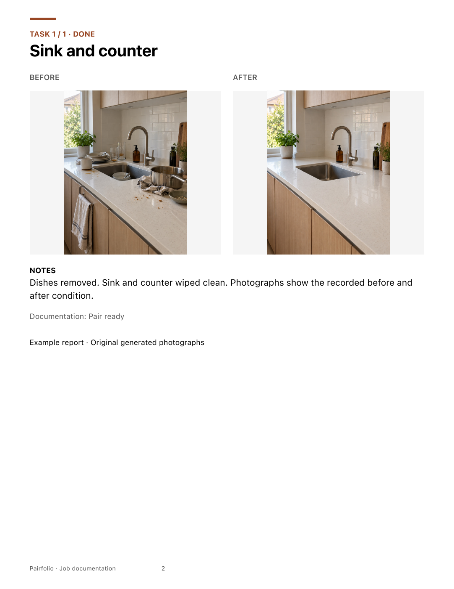

Every task.
Both photographs.
A labeled Before and After slot keeps a room or repair together. Take a photo or choose one, inspect the details and add factual notes.
BEFORE + AFTER JOB REPORTS · IPHONE + IPAD
Pair each task's photographs. Check what is missing. Leave your client a report they can follow.
See a real example report ↗Version 1.0(3) submitted · October 22, 2026
App and Lifetime Pro are Waiting for Review. Not yet available to download.
Original generated example photographs, organized through the actual app.
A labeled Before and After slot keeps a room or repair together. Take a photo or choose one, inspect the details and add factual notes.
Photo completeness is separate from your task checkmarks. An out-of-scope task needs a reason. Incomplete reports are clearly labeled Draft.
Preview an A4 or US Letter PDF on the device. Photographs are fitted without cropping, with the job details, ordered tasks and notes.
ACTUAL PAIRFOLIO OUTPUT
The report shown here was generated by the native app using the original example photographs. Labels, captions, task order and page numbers come from the saved job.
Keep a portable job backup with its photos and report style. Import a fresh copy without replacing existing work. Recoverable Trash keeps older jobs on the device until you restore them.
Dates and task status are supplied by the report creator. Reports do not certify work quality, photo authenticity, legal evidence or customer acceptance.

A USEFUL FREE WORKFLOW
One active job, three photo pairs, editing, checklist, PDF and portable backup are free. Move an older job to recoverable Trash to start another.
Optional Lifetime Pro is a one-time Apple purchase for up to 100 active jobs, 60 pairs per job, your logo and 10 reusable report templates. The in-app price comes from Apple. Existing work stays editable and exportable if Pro is unavailable.
THE IPHONE CAMPAIGN
Authentic native UI and real app-generated PDF output, composed around an original generated photo example.
DESIGNED AND ENGINEERED BY SEPIDEH JAVANBAKHT DALIR
SwiftUI and UIKit on iPhone and iPad. ImageIO creates bounded oriented image copies; Core Graphics builds the reports. Versioned atomic job storage, content hashes, validated portable backups and fresh restore identities protect saved work.
StoreKit 2 verifies purchase access and supports restoration. No developer account, backend, ads or analytics uploader. Native model, image, PDF and local purchase tests are recorded separately from physical-device and live Apple Sandbox checks.
Read the public product and engineering case study ↗